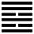

Phong Hỏa Gia Nhân (家人 jiā rén)
Di là bị thương; hễ ra ngoài bị thương thì trở về nhà, cho nên sau quẻ Minh di tới quẻ Gia nhân. Gia nhân là người trong một nhà.
Thoán từ: :
家人: 利女貞．
Gia nhân : Lợi nữ trinh.
Dịch: người trong nhà: hễ đàn bà mà chính đáng thì có lợi.
Giảng: Nội quái là Ly, sáng suốt; ngoại quái là Tốn thuận. Ở trong thì suốt, xử trí không hồ đồ, ở ngoài thì thuận, như vậy việc tề gia sẽ tốt đẹp. Nói rộng ra việc nước cũng vậy, vì người trong một nước lấy nước làm nhà; mà việc thế giới cũng vậy, vì mỗi nước như một người, cả thế giới như một nhà.
Quẻ này, nội quái Ly là trung nữ, ngoại quái Tốn là trưởng nữ (1); hào 2, âm làm chủ nội quái, hào 4, âm làm chủ ngoại quái, hai hào đó đều đắc chính cả, cho nên nói đàn bà mà chính đáng thì có lợi.
Tuy chỉ nói “nữ” trinh thôi, nhưng phải hiểu nam cũng cần chính đáng nữa, vì nếu nam không chính đáng thì nữ làm sao chính đáng được. Cho nên Thoán truyện giải thích: Đàn bà chính đáng ở trong (ám chỉ hào 2, âm ở vị âm trong nội quái), mà đàn ông chính đáng ở ngoài (hào 5, dương, ở vị dương trong ngoại quái); đàn bà lo việc nhà, đàn ông lo việc ở ngoài, cả hai đều giữ đạo chính, đó là hợp với nghĩa lớn của trời đất (nữ chính vị hồ nội, nam chính vị hồ ngoại; nam nữ chính, thiên địa chi đại nghĩa dã). Nam nữ là nói chung, gồm cả cha mẹ, con cái, anh chị em, vợ chồng, ai nấy đều phải giữ đạo chính hết, chứ không phải chỉ có người trên, chồng không phải giữ đạo. Cha mẹ cũng có đúng đạo cha mẹ thì con mới đúng đạo con, anh em cũng vậy, chồng vợ cũng vậy. Thời xưa chẳng riêng ở Trung Hoa mà ở khắp các nước theo chế độ phụ quyền như phương Tây cũng vậy, không có bình đẳng giữa nam nữ; nhưng về tư cách, đạo đức, thì nam nữ đều có bổn phận, trách nhiệm ngang nhau.
Đại tượng truyện khuyên: coi tượng quẻ này, gió từ trong lửa phát ra (điều này khoa học đã giảng rồi), người quân tử hiểu rằng trong thiên hạ, việc gì ở ngoài cũng phát từ ở trong; muốn trị nước thì trước phải trị nhà, muốn trị nhà thì trước phải tu thân; mà việc tu thân cốt ở hai điều: nói phải có thực lý; thực sự, không nói suông, vu vơ; làm thì thái độ phải trước sao sau vậy, triệt để từ đầu tới đuôi, đừng thay đổi hoài (quân tử dĩ ngôn hữu vật, như hạnh hữu hằng).
Ý nghĩa các hào:
1.
初九: 閑有家, 悔亡．
Sơ cửu: nhàn hữu gia, hối vong.
Dịch: Hào 1, dương: phòng ngừa ngay từ khi mới có nhà thì không hối hận gì cả.
Giảng: Hào này dương cương ở đầu quẻ Gia nhân, chính là lúc mới có nhà, nếu biết đề phòng, ngăn ngừa ngay các tật như lười biếng, xa xỉ thì không có gì phải ăn năn. Ý hào này cũng như tục ngữ của ta: Dạy con từ thuở còn thơ, dạy vợ từ thuở bơ vơ mới về.
2.
六二: 无攸遂, 在中饋, 貞吉．
Lục nhị: vô du loại, tại trung quĩ, trinh cát.
Dịch: Hào 2, âm: không việc gì mà tự chuyên lấy thành công (nắm hết trách nhiệm), cứ ở trong nhà lo việc nấu nướng, giữ đạo chính thì tốt.
Giảng: Hào này âm nhu mà ở vị âm, đắc trung đắc chính là người dâu hay con gái thuận tòng, nhún nhường, nhưng bất tài, ở địa vị thấp, nên không gánh vác nổi việc trị gia, không lãnh trách nhiệm lớn được, chỉ nên lo việc nấu nướng ở trong nhà thôi.
3.
九三: 家人嗃嗃, 悔厲, 吉．婦子嘻嘻, 終吝．
Cửu tam: Gia nhân hác hác, hối lệ, cát; phụ tử hi hi, chung lận.
Dịch: Hào 3, dương: người chủ nhà nghiêm khắc, tuy hối hận, có nguy nhưng lại tốt; (nếu quá khoan để cho) dâu con nhí nhảnh chơi đùa thì lại hối tiếc.
Giảng: Hào này là dương ở vị dương, đắc chính nhưng không đắc trung, quá nghiêm khắc, tuy có lúc phải hối hận, gặp nguy, nhưng kết quả lại tốt vì nhà có trật tự, trái lại nếu quá dễ dãi để cho dâu con luông tuồng, thì nhà sẽ suy loạn mà phải hối tiếc.
4.
六四: 富家, 大吉．
Lục tứ: phú gia, đại cát.
Dịch: Hào 4, âm: Làm giàu thịnh cho nhà, rất rốt.
Giảng: Hào này âm nhu, đắc chính ở vào ngoại quái Tốn, ở địa vị cao, như bà mẹ có trách nhiệm làm cho nhà giàu thịnh lên.
Theo Phan Bội Châu, chữ “phú” ở đây không có nghĩa là làm giàu, mà có nghĩa là gia đạo hưng thịnh lên, mọi người hoà hợp nhau, trên ra trên, dưới ra dưới.
5.
九五: 王假有家, 勿恤, 吉．
Cửu ngũ: Vương cách hữu gia, vật tuất, cát.
Dịch: Hào 5 dương : vua (hoặc gia chủ) rất khéo về việc trị gia (cách là rất tốt không có gì phải lo, tốt.
Giảng: Chữ vương ở đây có thể hiểu là vua trong nước hay gia chủ, nếu hiểu là vua thì “trị gia” phải hiểu là “trị quốc”
Hào này dương cương, đắc trung, đắc chính, lại có hào 2, âm ở dưới ứng với mình, cũng trung, chính; như có người nội trợ hiền giúp đỡ mình, không còn lo lắng gì nữa, tốt.
6.
上九: 有孚, 威如, 終吉．
Thượng cửu: Hữu phu, uy như, chung cát.
Dịch: Hào trên cùng, dương: (người trên) có lòng chí thành và thái độ uy nghiêm (không lờn) thì cuối cùng sẽ tốt.
Giảng: Hào này ở trên cùng quẻ Gia nhân, tức lúc gia đạo đã hoàn thành. Người trên chỉ cần thành tín là người dưới tin, lại nghiêm trang thì đạo được tốt đẹp lâu dài.
*
Quẻ này dạy cách tề gia, cần nhớ ba điều này:
- Phải ngăn ngừa ngay từ lúc đầu.
- Bất kỳ người nào trong nhà, nhất là những người trên, phải giữ chánh đạo, giữ bổn phận, trách nhiệm của mình.
- Người chủ phải nghiêm, nếu nghiêm thì có điều hối hận đấy, nhưng còn hơn là quá dễ dãi.
Chúng ta để ý: sáu hào không có hào nào xấu; nhưng ba hào dưới thuộc về bước đầu, có lời răn bảo (hào 1: phải phòng ngừa từ lúc đầu, hào 2: phải giữ đạo chính ; hào 3: coi chừng nghiêm quá thì hối hận, nguy); tới hào 4 và 5; kết quả rất tốt, hào cuối chỉ cách giữ được sự tốt đẹp đó tới cùng.